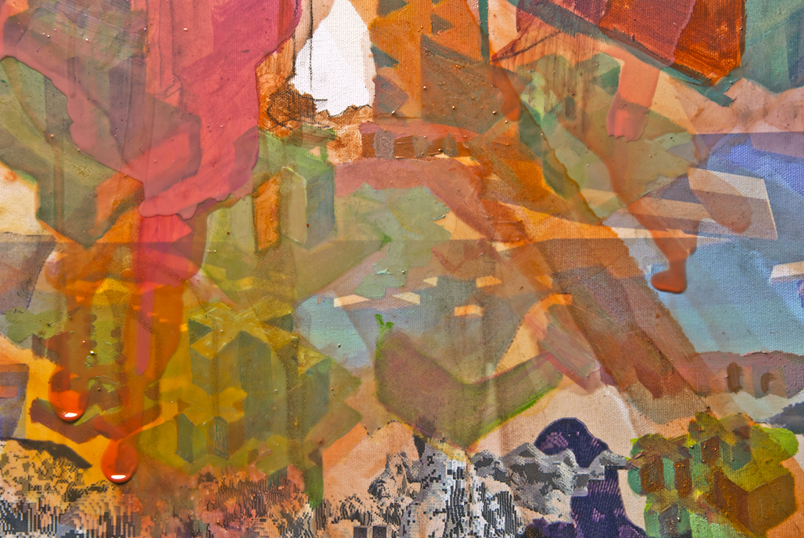
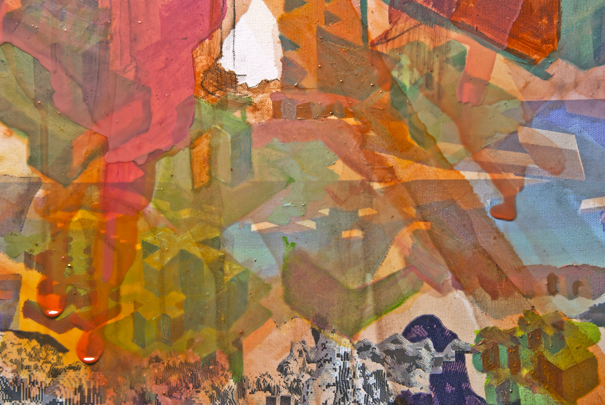
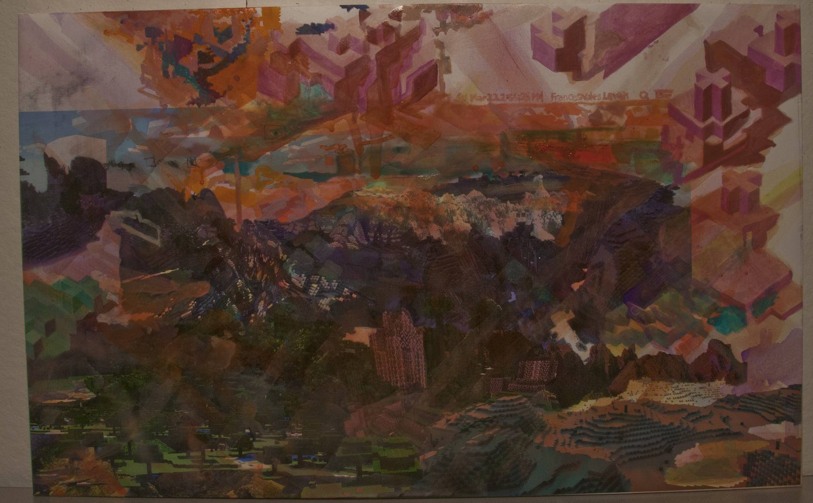
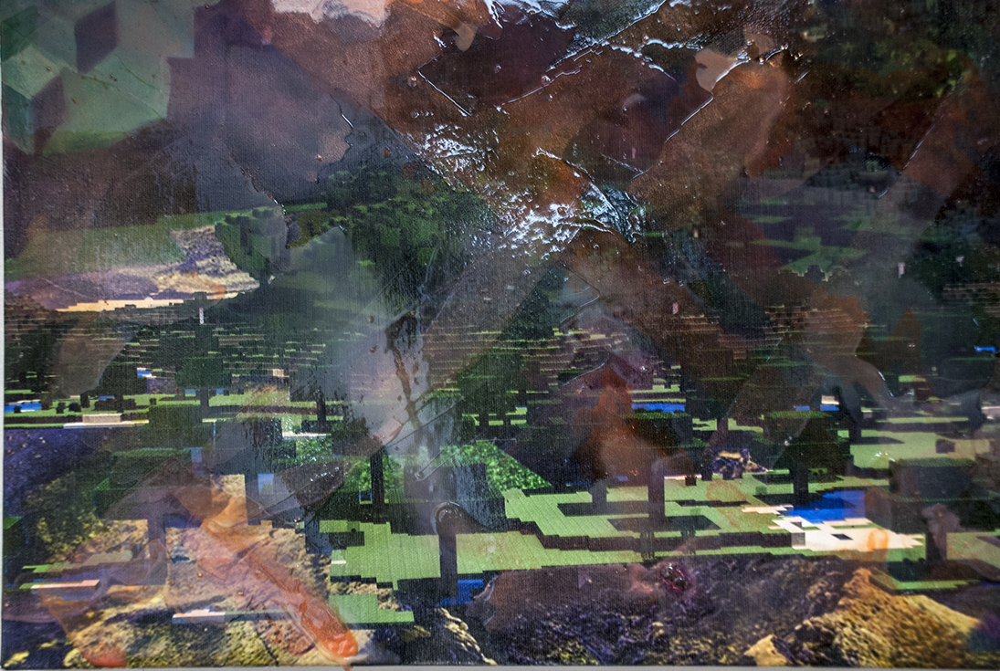
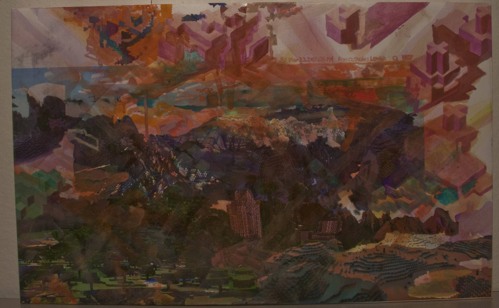
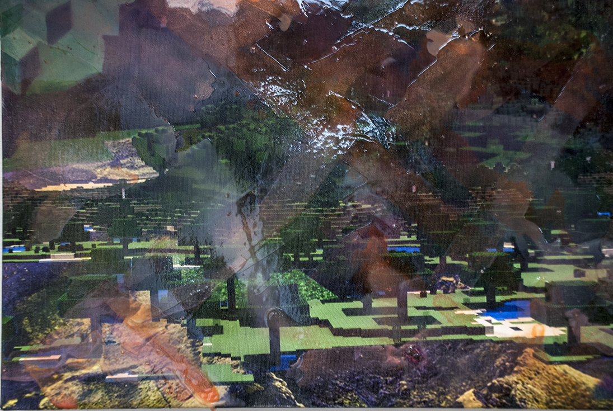
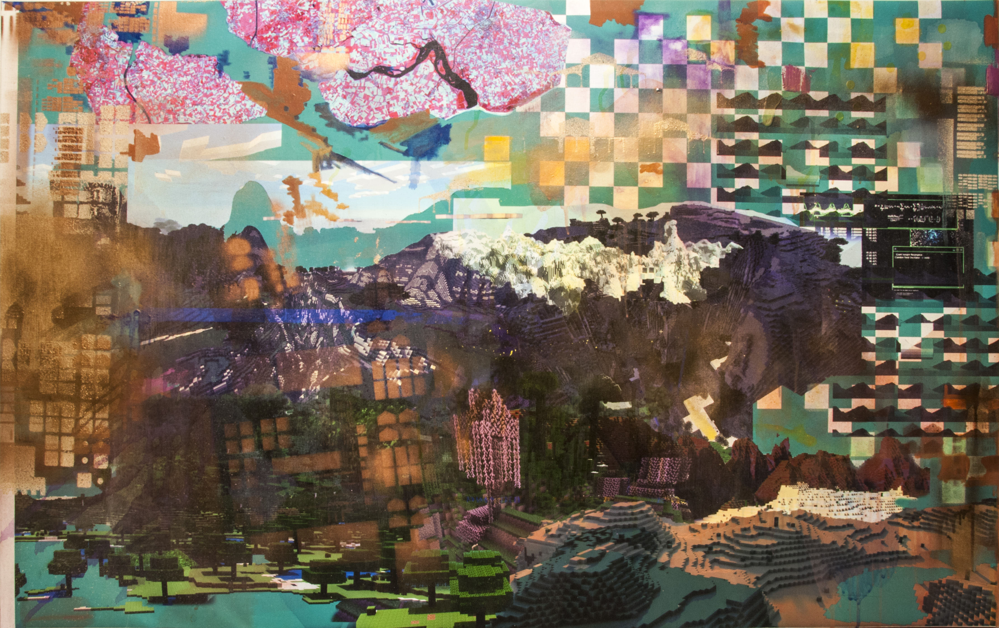
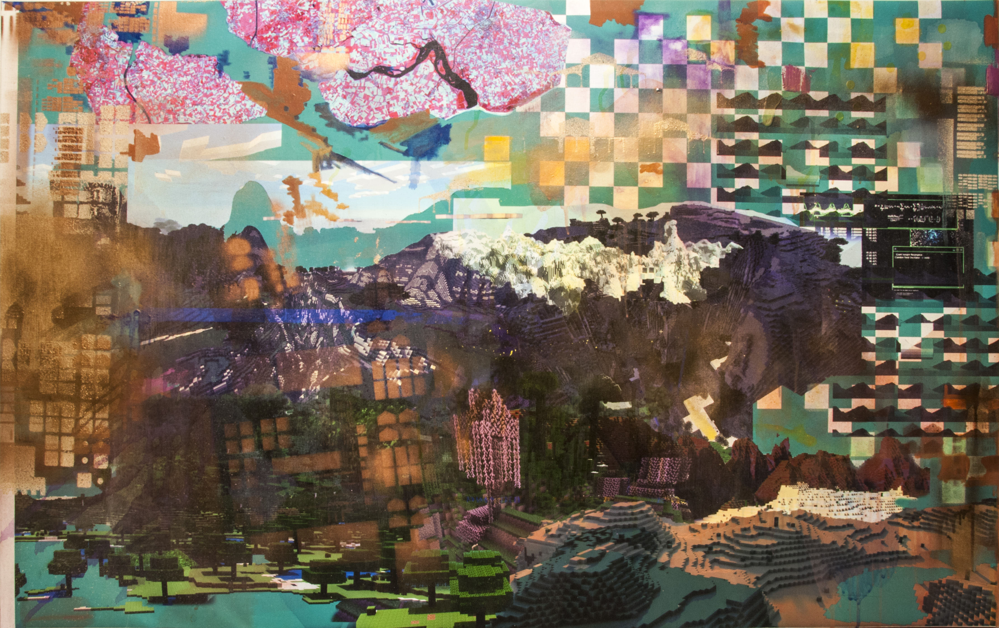

- Through the process of layering information fragments from various sources, I aim to display the linked nature of geometry in nature and reproductions of it. I aim to mimic the space of the web. By weaving together various paint applications and rendering styles into a single painting, I create a hybrid space full of layers and links. Through the process of simulating the experience of processing information on the web in paint, my paintings offer viewers an abstract playground where no single navigational architecture holds precedence over another (because there are no words). I aim to engage my viewers in an active viewing experience, so that my viewers will recognize this phenomenon when it occurs while navigating digital space.
The Live Archive2015. 6'x 3' Oil on canvas.


Undergraduate Senior Thesis work: Minecraft Landscapes 2014. ~42"x 32" Oil on canvas.


 

 



 
